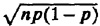

In spite of the problems listed above, capacity planning continues to be an important problem to be faced by a computer installation manager. Fortunately, a number of commercial capacity planning tools are available in the marketplace. Many of these tools have built-in models of specific systems and include workload analyzers that understand the accounting logs of the systems. Some also have built-in monitors.
9.3 COMMON MISTAKES IN BENCHMARKING
Benchmarking, the process of running benchmarks on different systems, is the most common method to compare the performance of two systems for capacity planning and procurements. Following is a list of mistakes that have been observed repeatedly in this process. Like mistakes discussed in other sections of this book, these mistakes are a result of inexperience or unawareness on the part of the analysts. The games, which are tricks played consciously by experienced analysts, are listed in Section 9.4.
- 1. Only Average Behavior Represented in Test Workload: A test workload is designed to be representative of the real workload. The workload designers ensure that the relative resource demands are similar to those observed in the real environments. However, only the average behavior is represented. The variance is ignored. For example, the average number of I/O’s or average CPU time in the test workload may be similar to those in the real workload. A distribution, such as uniform, exponential, or constant, may be picked arbitrarily without any validation. Constant values are undesirable since they can cause synchronizations leading to faulty conclusions. In some cases, variance or even a more detailed representation of the resource demands is required.
- 2. Skewness of Device Demands Ignored: The I/O requests are commonly assumed to be evenly distributed among all I/O devices. In practice, the 1/0 requests may follow a train behavior such that all successive I/O’s may access the same device leading to higher queueing times. Ignoring this skewness for I/O requests and for network requests leads to lower response time predictions and may not show device bottlenecks that may occur in real environments.
- 3. Loading Level Controlled Inappropriately: The test workloads have several parameters that can be changed to increase the load level on the system. For example, the number of users can be increased, the think time of the users can be decreased, or the resource demands per user can be increased. These three options do not have the same results. The most realistic way is to increase the number of users, but in measurements this requires more resources [more Remote-Terminal Emulators (RTEs) or more storage space in a simulation] and so the other two alternatives may be used. Changing the think time is the easiest alternative but is not equivalent to the first alternative since the order of requests to various devices is not changed; hence, the cache misses may be much lower than those in a system with more users. The third alternative changes the workload significantly, and it may no longer be representative of the real environment.
- 4. Caching Effects Ignored: Caches are very sensitive to the order of requests. In most workload characterization studies, the order information is totally lost. Even matching the average and variance of resource demands does not ensure that the cache performance will be similar to that in a real environment. In modern systems, caching is used for accesses to memory, disks, as well as networks. It has become more necessary than before to closely model the order of arrivals.
- 5. Buffering Sizes Not Appropriate: The buffer sizes have a significant impact on the performance of I/O and networking devices. For example, in some cases, a 1-byte change in the buffer size may double the number of network messages. The size and number of buffers are generally system parameters, and their values in experimental systems should represent the values used in production systems.
- 6. Inaccuracies due to Sampling Ignored: Some of the data collected for workload characterization is gathered using sampling, where in a number of state indicators the counters are read periodically. Sometimes, this can lead to significant errors in measurements, as shown in the following example.
- Example 9.1 A device whose utilization is 1% is sampled every second for 10 minutes. During this period, the device’s status would have been sensed 60 × 10 times, and the device is expected to be found busy 60 × 10 × 0.01, or 6, times. In practice, since a random event is being sampled, the number of busy samples is expected to be binomially distributed with a mean of np and a standard deviation of , where n is the number of samples and p is the probability of the event. In this case, n = 600 and p = 0.01. The mean and standard deviations are 6 and 2.43. The probability of the number of busy samples being beyond the mean plus or minus one standard deviation (3.56 to 8.43) is approximately 32%. Thus, in 32% of the cases the utilization will be measured below 0.6% or over 1.4%.
Another example of inaccuracy due to sampling is that of program counter sampling. The addresses where a program makes I/O calls may be observed more often not because those addresses are visited more frequently but because a program may spend considerable time there waiting for I/O completions.
- 7. Ignoring Monitoring Overhead: The data collection mechanism or the software monitor used in measurement have overhead that introduces some error in the measured values. It may consume processor, storage, and I/O resources to keep and log the measurements. If the inaccuracy, for instance, is 10%, the model output may be more or less inaccurate, even if the model is precise.
- 8. Not Validating Measurements: This is a common mistake. While simulation and analytical models are routinely validated before use, validation of measured data is rarely thought of. Any errors in setting up the experiment may remain totally unnoticed. For example, in hardware monitors, it is easy to misplace a probe or have a loose probe. It is therefore necessary to cross check the measurements. All counterintuitive results should be explained. Any values that cannot be explained should be investigated. Automatic checks should be included in the measurements; for example, the total number of packets sent by all nodes in a network should be close to the total number received.
- 9. Not Ensuring Same Initial Conditions: Each run of the benchmark changes the state of the system. For example, the disk space available may be reduced. The data records may have different contents. Starting the next run on the changed system may make the experiment nonrepeatable. One solution is to ensure that all files created by a workload are deleted and those changed are reloaded to their original state. Another solution is to study the sensitivity of the results to such phenomena. If the results are very sensitive to the initial conditions, then more factors should be added to the workload model.
- 10. Not Measuring Transient Performance: Most measurement experiments, simulations, and analytical models are designed to predict the performance under stable conditions. During measurements, the system is allowed to reach a stable state before measurements are taken. For example, the caches are allowed to be filled in before starting the measurements. This is a valid approach in most cases. However, if the system is such that it takes a long time to reach steady state, then in real environments it is expected to be often moving from one state to the next. In other words, the system is expected to be in a transient state more often than in a steady state. In this case, it is more realistic to study the transient performance of the system than the steady-state performance.
- 11. Using Device Utilizations for Performance Comparisons: Device utilizations are performance metrics in the sense that given the same workload, a lower utilization is preferred. However, their use to compare two systems may be meaningless sometimes. For example, in a closed environment requests are generated after a fixed think time interval after satisfying the old requests. Given two systems for such an environment, the system with faster response time will have more requests generated per unit time and will have higher device utilizations. Lower utilization for the same number of users should not be interpreted to mean a better system. The right metric to compare two systems in this case is to compare the throughput in terms of requests per second.
Another common mistake is to use utilizations for model validations. As shown in Chapter 33, utilizations can be determined easily from service times and the frequency of visits and can be matched easily even if the response times are very different. Matching utilizations predicted from a model to those measured in a real environment does not really validate the model.
- 12. Collecting Too Much Data But Doing Very Little Analysis: This is a common mistake. The data collection is the first step in benchmarking. The next step of data analysis may not get adequate attention for several reasons. First, the person doing the measurement may have little or no training in statistical techniques. The usual charts of resource demands and utilizations as a function of time may be prepared but no further insights may be drawn. Second, the data measurement may itself take so much time of the project that none is left for analysis. One way to avoid this pitfall is to form teams of analysts with measurement and analysis backgrounds, to carefully allocate analysis time during project planning, and to interweave the measurement and analysis activities. Often the measurement plans may have to be changed based on the results of the analysis.